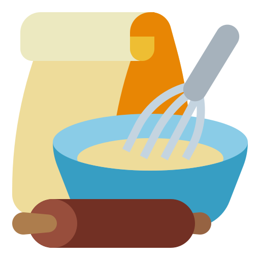

I think it was the first week o the lockdown. My doorbell rang. I hadn’t ordered anything, so I opened the door with caution. Turns out a friend of mine had bought Easter breads (flavored with mastic and mahlab) for her close-knit group of friends from a favorite bakery of mine in İstanbul, called Üstün Palmie. And I was one of those lucky recipients. It came to my door still warm from the bakery and I’ve been obsessed with baking the best version of it at home ever since. More on that later.The obsession started with that bread–actually, sweetened and flavored breads are called çörek (pronounced “chö-wreck”) in Turkey–and continued with this wonderful Chocolate Babka, drenched in a dark caramel syrup.
For those who will be baking a babka for the first time, I highly recommend using a stand mixer. The dough is quite wet and sticky in the beginning and becomes smooth and much easier to work with after a 10-minute beating in the mixer. Once the dough is done, the rest is a breeze. I chill both the risen dough and the chocolate filling briefly, which makes it much easier to roll out the dough and spread the filling evenly.
Once the logs are done, I prefer to chill them again until firm–this time in the freezer for 5-10 minutes–so that the layers don’t squish when you cut into the logs.
The recipe makes two babkas. One is for you and the other one is for someone who you feel needs some love during these unsettling times. I wish I could have gifted my second babka to my friend who brightened my day with her thoughtful gesture, but as soon as travel restrictions were lifted she took off to her house in Selimiye–a small fishing village located on the mountainous Bozburun Peninsula, where the Mediterranean sea meets the Aegean sea and the days are always bright, with or without a babka.
Classic recipes call for a simple sugar syrup, but I thought why bother with “simple” when you can drench these beauties in dark caramel? Of course I was right. Almost anything in the world is better with caramel.For this syrup, you start by making a dry caramel, which means there’s no need to add water in the beginning. As soon as the sugar turns dark amber brown, you hold the saucepan at arm’s length and add the water. You have to be very carefully–as soon as you add the water, the caramel will bubble up vigorously and hot steam will rise. To avoid any mishap, I recommend adding the water using a soup ladle. This way, your hand won’t get anywhere near the hot steam.Once the caramel syrup has cooled, you brush it generously over the hot babkas.
And then the exhausting wait starts. You must let them cool completely before slicing. It will be hard, but your patience will be richly rewarded.
Enjoy!
 Ingredients
Ingredients
3¾ cups (530 g/18.7oz) all-purpose flour , plus extra for dusting
½ cup (100 g/3.5oz) granulated sugar
1 tablespoon (10g) instant yeast
3 large eggs
½ cup (120 m) water
¾ teaspoon fine sea salt
⅔ cup (150 g/5.3 oz) unsalted butter , at room temperature, cut into small cubes
Neutral oil (sunflower, canola) for dressing
½ cup (50 g/1.7oz) powdered sugar
130 g (4 oz) dark chocolate , melted*
½ cup (120 g/4oz) unsalted butter , melted
⅔ cup (120 g/4oz) chocolate chips or chunks OR 1 cup
(100g/3.5oz) pecans, coarsely chopped (optional)
½ cup (120ml) water
½ cup (100g) granulated sugar
 Instructions
1. To make the dough, in the bowl of a stand mixer, stir together the flour and yeast.
2. The sugar dissolves. Remove the pan from the heat and let the mixture cool for 10 minutes.
3. Whisk the eggs into the cooled milk mixture and pour it over the dry ingredients.Stir with a silicone spatula until the flour is absorbed.
4. Attach the bowl and the dough hook onto the mixer and beat at medium speed until the dough pulls away from the sides and becomes elastic and smooth, for about 10 minutes.
5. Halfway into the beating, a portion of the dough may stick to the sides of the bowl and separate from the main dough. In that case, stop the mixer, scrape the sides of the bowl with the spatula and combine the stuck dough with the main dough, then continue beating.
6. The dough will be smooth, sticky, and elastic. Scrape the dough into a generously buttered large bowl, cover tightly with lightly buttered plastic wrap, and let rise at room temperature until doubled in size, 60-75 minutes. After the first rise is complete, transfer the dough with the bowl to the refrigerator and chill for 30 minutes.
7. While the dough chills, make the chocolate filling. In a medium saucepan over medium-low heat, melt the chocolate and butter, stirring occasionally with a wire whisk. Remove the pan from the heat, add the rest of the ingredients and whisk until smooth. Transfer the filling to a bowl and chill, uncovered, until it is thick enough to spread easily, about 15 minutes.
8. Generously butter the bottom and sides of two 9-inch (23-cm) loaf pans. Dust the pans with flour and tap out the excess.
9. Turn the chilled dough out onto a lightly floured work surface. Deflate the dough by pressing down in the center with your palm and roughly shape it into a small rectangle with your hands. Lightly flour the dough and roll it out into a 16-by-24-inch (40-by-60-cm) rectangle. Gently stretch out the rounded corners occasionally to make a neat rectangle, taking care not to tear the dough.
10. Using a metal offset spatula, spread the chilled chocolate filling over the surface of the rectangle in an even layer, leaving a 3⁄4-inch (2-cm) border all around. Starting at the long end of the rectangle that is closest to you, roll up the dough tightly and pinch the seam between your fingers to seal. You will have a log that is 24 inches (60 cm) long. Cut the log in half crosswise into two 12-inch (30-cm) logs. Transfer the logs to a cutting board and freeze, uncovered, until firm enough to cut without squishing the layers, 5-10 minutes.
11. Using a large heavy serrated knife, cut each of the logs in half lengthwise, exposing the layers. Place two log halves on the cutting board with the cut sides facing up and overlap the top end of one half over the other and pinch the ends together. Working your way down, fold the halves over each other as if you are braiding them until you reach the bottom ends. Pinch together the bottom ends and place the braided dough in one of the prepared pans. Gently arrange the dough so that the top is level and the ends touch the pan on both ends to ensure an even rise. Repeat the same steps for the other two log halves. Cover the pans loosely with plastic wrap and let them rise in a warm spot until they are almost doubled in size and reach 1/2 inch above the top of the pan, 60-75 minutes.
12. At least 30 minutes before baking, set a rack in the middle of the oven and preheat the oven to 350°F (180°C)